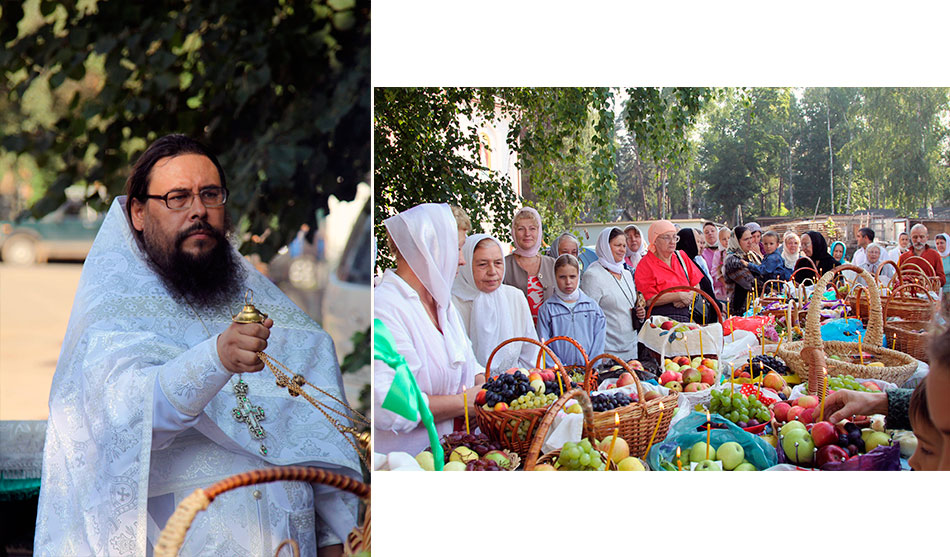
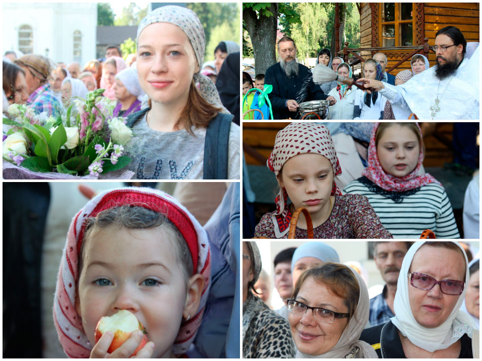

19 августа в народе традиционно называют Яблочным Спасом: в этот день освящают не только свежие яблоки, но и все фрукты нового урожая. Однако главным событием этого дня является праздник Преображения Господня.
Евангелия повествуют, что Иисус пророчески произнес: «...истинно говорю вам: есть некоторые из стоящих здесь, которые не вкусят смерти, как уже увидят Царствие Божие, пришедшее в силе» (Мк. 9:1), а спустя шесть дней взял троих ближайших учеников – Петра, Иакова и Иоанна – и поднялся вместе с ними на гору помолиться. Там во время молитвы Он «преобразился пред ними: и просияло лице Его, как солнце, одежды же Его сделались белыми, как свет» (Мф. 17:2). При этом явились два ветхозаветных пророка, Моисей и Илия, и беседовали с Иисусом «об исходе Его, который Ему надлежало совершить в Иерусалиме» (Лк. 9:31). Увидев это, пораженный и испуганный Петр сказал: «Равви! хорошо нам здесь быть; сделаем три кущи: Тебе одну, Моисею одну, и одну Илии» (Мк. 9:5). После этих слов явилось облако, осенившее всех, и ученики услышали из облака голос: «Сей есть Сын Мой возлюбленный, в Котором Мое благоволение; Его слушайте» (Мф. 17:5).
Спускаясь с горы, Иисус запретил ученикам говорить об увиденном ими, «доколе Сын Человеческий не воскреснет из мертвых» (Мк. 9:9).
Проповедь игумена Сергия

Христос Спаситель через причастие приходит в наше сердце, в нашу душу. И мы получаем наше внутреннее Преображение, становясь Богоносцами, нося в своем сердце Христа. Мы не должны забывать, что, причастившись, следует особо тщательно ограждать себя от греха и помнить, что мы причастились Святых Христовых тайн во исцеление души и тела. Господь посылает нам милость свою, чтобы мы постоянно помнили о том, что через причастие с телом Христовым мы облеклись во Христа, Господа нашего, поэтому нам надлежит постоянно помнить о своем духовном и внутреннем Преображении.
Сердечно поздравляю вас с праздником Преображения Господня и желаю вам обильных милостей Божиих, спасения, радости, терпения, мира, благополучия.
Сегодня в Церкви освящаются новые приношения, которые мы не вкушали до настоящего дня. Это как Пасхальная трапеза, ведь кулич пасхальный или пасхальное яйцо не вкушают до Пасхи, поэтому только сейчас освященными приношениями можно разговеться. А кто вкушал их, весь август не касаются этих приношений – так записано в Уставе Церкви. Мы понимаем и принимаем эти ограничения, которые наделяют нас духовным разумением и умением воздерживаться не только в словах, но и в деле, иметь воздержание и пище, слове.
Праздник Преображения Господня служит нам добрым примером для духовного спасительного дня, и Господь помогает всем нам здесь, на земле, преобразиться, с верой, надеждой и любовью пройти поприще земной жизни и сподобиться неизреченной радости, которую дарует всем Господь.
М.В. Волынкина
Е. Малеванная